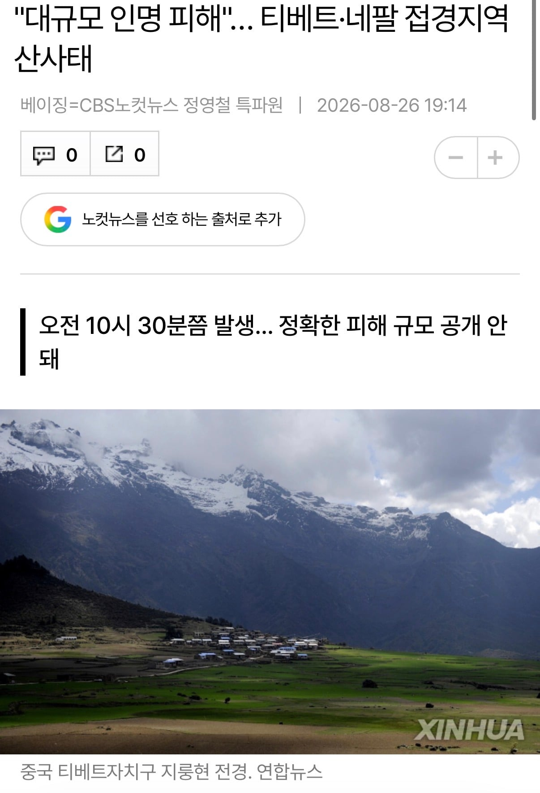

사상자 파악도 안된다고 함
중국 공산당 관영매체 신화통신조차
'대규모 사상자 발생'이라는 표현을 쓴 것으로 보아
사상자 규모가 엄청난듯

사상자 파악도 안된다고 함
중국 공산당 관영매체 신화통신조차
'대규모 사상자 발생'이라는 표현을 쓴 것으로 보아
사상자 규모가 엄청난듯
어휴.. 다들 고통없이 가셨기를.. ㅠ 너무 안타깝다
궁금해서 찾아보니까 구글지도에 표시가 되어 있네
https://www.google.com/maps/@28.277478,85.3834743,4515m
핵이랑 다를게 없구나...
무슨 재난영화의 한장면 같다 ....
무슨 콘크리트유토피아 인트로장면같으냐ㄷㄷㄷ
뭔 산사태가 저리... 중국에서 핵실험이라도 했나
자연적인 산사태 맞어?? 무슨 핵폭탄이라도 터트린거 아냐???
저게 말이 되나
빙하호가 터졌다고함. 호수가 주저앉았으니 지금으로는 41km니까 거의 시단위급으로 박살났다던데
아니 피할수도없네;;
어머 어떡해 ;;;
와 ㅅㅂ 말그대로 ㅈㄴ 무섭네;;
자연앞에서 인간이란 아무것도 아니구나..
아니 도망 친다고 되는게 아니잖아..
와 첫번째 영상에서 건물뒤에 숨으면 되려나했는데 건물 통째로 날라가네
이건 뭐 어떻게 해야하냐 참
와 진짜 재앙이네 ..
바위랑 토사좀 밀려 오는 수준일줄 알았는데 ㄷㄷㄷ
아...이건...아...진짜 무섭네
아니 씨바 이게;;.. 영상보면 하늘은 개맑은데 이게 무슨.. 어지간해야 사람들 구조가 됐으려나? 이런생각이 들텐데 그냥 이거는...
알고도 도망은 어림도없네 ㅁㅊ
초반만 보고 건물에 들어가면 살지 않나? 싶었는데 미친...